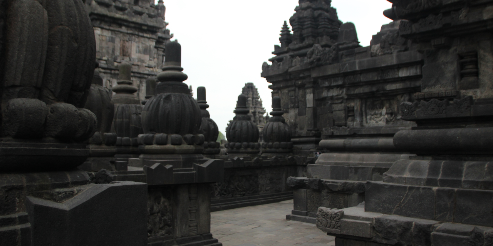
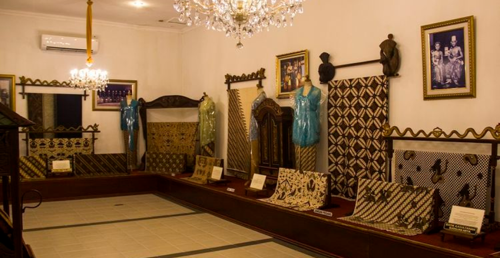

destinasi wisata
Destinasi wisata di Indonesia, khususnya di Jawa Tengah tentunya memiliki keindahan tersendiri yang tidak dimiliki tempat lain. Hal inilah yang tentunya membuat banyak orang tertarik mengunjunginya. Mulai dari tempat wisata berupa wisata alam sampai wisata wisata budaya.
candi borobudur
Borobudur adalah sebuah candi Buddha yang terletak di Borobudur, Magelang, Jawa Tengah, Indonesia. Borobudur adalah candi atau kuil Buddha terbesar di dunia, sekaligus salah satu monumen Buddha terbesar di dunia.
museum danar hadi
Museum Batik Danar Hadi merupakan bagian dari Rumah Batik Danar Hadi atau House of Danar Hadi. Lokasi Museum Batik Danar Hadi berada di Jalan Slamet Riyadi Nomor 261, Sriwedari, Kecamatan Laweyan, Surakarta, Jawa Tengah. Baik Museum maupun Rumah Batik Danar Hadi menempati bangunan kuno yang merupakan cagar budaya di Solo.

candi prambanan
Candi Prambanan adalah bangunan candi bercorak agama Hindu terbesar di Indonesia yang dibangun pada abad ke-9 Masehi. Candi ini juga candi Hindu terbesar di Indonesia, sekaligus salah satu candi terindah di Asia Tenggara.